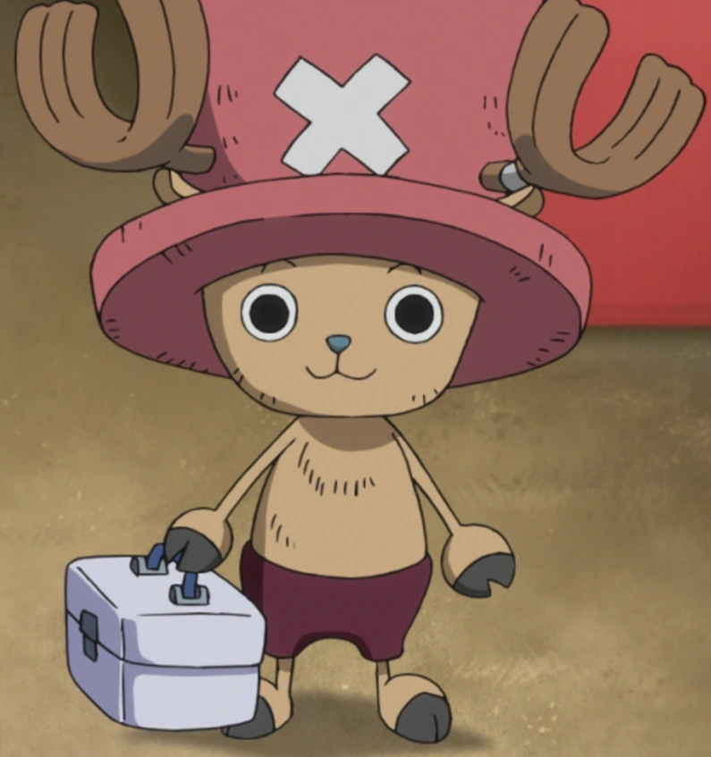
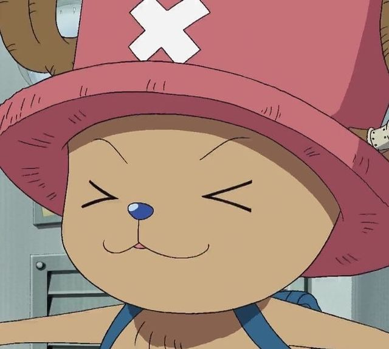

Es el médico de la tripulación. Es un reno que comió una Fruta del Diablo. Su sueño es convertirse en un médico capaz de curar cualquier enfermedad.
Nacido en la isla invernal de Drum, fue repudiado por su manada de renos por tener la nariz azul. Tras comer una Fruta del Diablo, también fue perseguido por los humanos. Fue rescatado por el curandero Dr. Hiriluk, quien lo bautizó. Tras la muerte de este, la Dra. Kureha le enseñó todo sobre medicina. Luffy lo invitó a su tripulación al notar su corazón y habilidades, no viéndolo como un monstruo, sino como un amigo.

Su forma habitual es la de un pequeño reno bípedo, muy parecido a un peluche (Brain Point), aunque la Marina lo confunde frecuentemente con un mapache. Tiene una nariz azul y lleva un sombrero rosa con una cruz blanca médica, regalo de Hiriluk (actualmente sobrepuesto por un casco azul claro).

Rol: Médico
Apodo: El Amante del Algodón de Azúcar
Recompensa actual: 1.000 Berries
Lugar de origen: Grand Line (Isla Drum)
Fruta del Diablo: Hito Hito no Mi